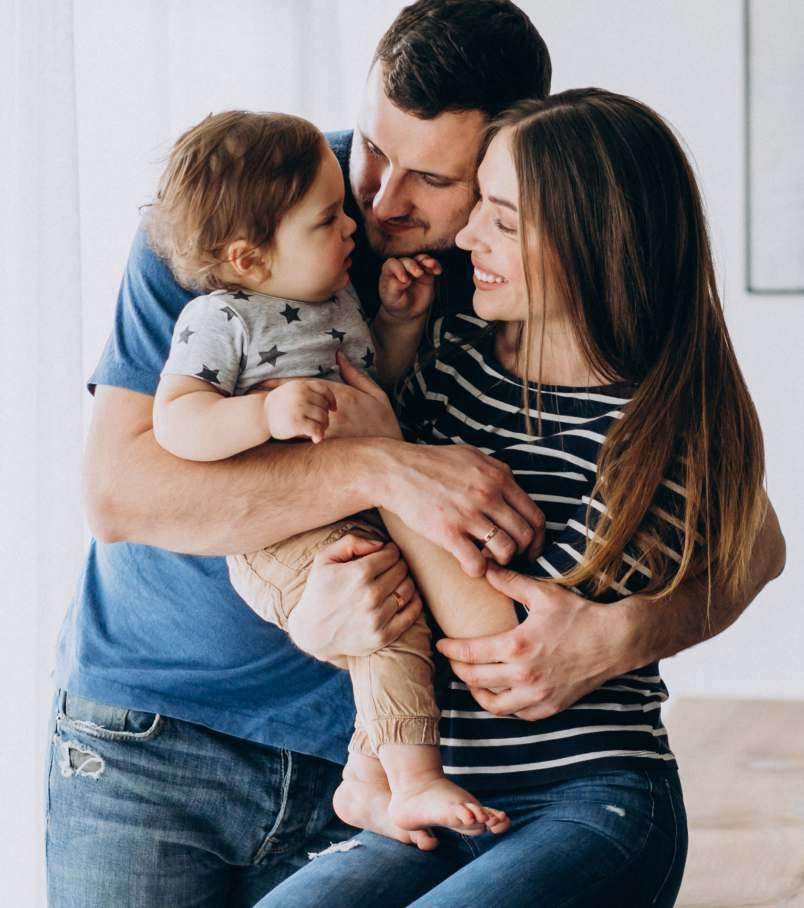

Descomplica
Recuperadora de Crédito
Mais do que uma corretora, uma parceira estratégica
Na Bem Melhor Seguros & Benefícios, acreditamos que um plano de saúde vai muito além de uma obrigação corporativa: é uma ferramenta de cuidado, valorização e bem-estar para as pessoas que fazem a sua empresa acontecer.
Nosso propósito é transformar custos em benefícios, construindo relacionamentos duradouros e proporcionando uma experiência diferenciada durante toda a jornada do cliente — com acompanhamento próximo do RH e dos colaboradores.
No fim das contas, não trabalhamos só com seguros. Trabalhamos cuidando de pessoas.
O mercado acostumou muita gente a receber apenas um contrato. Nós decidimos construir algo diferente: uma experiência. Nosso propósito é transformar custos em benefícios reais — cuidando de pessoas com estratégia, proximidade e consistência.
Existem três tipos de corretoras
Os quatro pilares da segurança
O que fazemos por você
Quando falamos de benefícios, estamos falando de verdade

Quem cuida de você
Cenário de contratação
Valores por Faixa Etária
Melhor equilíbrio entre custo e cobertura
Após análise técnica e comercial, destacamos dois produtos com excelente relação entre custo, cobertura, rede credenciada e condições comerciais para a Descomplica.